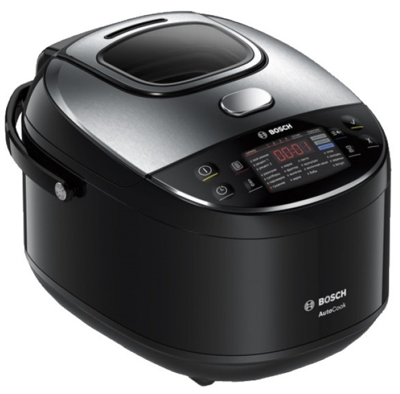

Мультиварка
Описание товара
Мультиварка Bosch MUC28B64RU может работать в режиме AutoCook, позволяющем только нажать кнопку и следовать текстовым указаниям на дисплее для получения готового блюда. Пользователю доступно 48 различных функций, которые подходят для ста популярных рецептов. Кроме того, в устройстве предусмотрена возможность тонкой настройки температуры и продолжительности нагрева.
Характеристики товара
Функции
- Авт. поддержание темп. нагрева Да
- Функция "мультиповар" регул. времени и температуры
- Отложенный старт до 12 часов
Управление
- Текстовые подсказки по приготовлению Да
- Тип управления сенсорный
Подробное описание товара
Невероятное разнообразие любимых блюд, приготовленных для вашей семьи. Нажатием кнопки. Крышка из нержавеющей стали для долгого срока службы. При помощи 48 автоматических режимов работы вы легко и быстро сможете приготовить более 100 блюд для всей семьи. Превосходный результат вам гарантирован. Благодаря AutoCook стало возможным приготовление разных блюд, включая самые сложные, нажатием кнопки. Успешный результат благодаря точной настройке температуры (с шагом 5°С) и антипригарному керамическому покрытию чаши. Вы получаете вкусный, быстрый и здоровый результат приготовления каждый раз. Наслаждайтесь использованием вашего прибора в течение долго времени. Прочный корпус, крышка из нержавеющей стали обеспечивают долгий срок службы. Наслаждайтесь готовкой по собственным рецептам, меняя температуру, время приготовления согласно вашим предпочтениям, сохранив настройки нажатием кнопки.